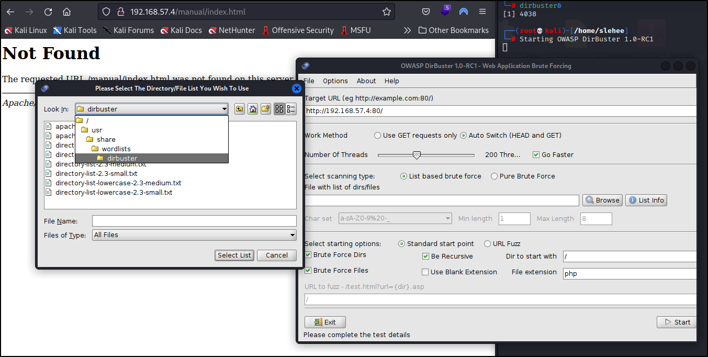

Scaninng & Enumeration
Starting with Kioptrix
ptrix Download
Vulnhub for more VM’s to test.
Scaning with Nmap
Tip
Arp scan: arp-scan -l
Netdiscover: netdiscover -r 192.168.57.0/24
r -range
nmap –help
nmap vuln script location /usr/share/nmap/scripts
nmap –scripts script-name -v ip
nmap -sV -A –script vuln -p 80,21 192.168.57.7
nmpa -T4 (speed 1-5) -p- all ports -A evertyhing
└─# nmap -T4 -p- -A 192.168.57.4 (kioptrix machine)
Tip
Script wih python: nmap scan all ports then results scan with -A (all)
Nmap results on Kioptrix:
Starting Nmap 7.92 ( https://nmap.org ) at 2022-11-05 13:33 GMT
Nmap scan report for 192.168.57.4
Host is up (0.00062s latency).
Not shown: 65529 closed tcp ports (reset)
PORT STATE SERVICE VERSION
22/tcp open ssh OpenSSH 2.9p2 (protocol 1.99)
|_sshv1: Server supports SSHv1
| ssh-hostkey:
| 1024 b8:74:6c:db:fd:8b:e6:66:e9:2a:2b:df:5e:6f:64:86 (RSA1)
| 1024 8f:8e:5b:81:ed:21:ab:c1:80:e1:57:a3:3c:85:c4:71 (DSA)
|_ 1024 ed:4e:a9:4a:06:14:ff:15:14:ce:da:3a:80:db:e2:81 (RSA)
80/tcp open http Apache httpd 1.3.20 ((Unix) (Red-Hat/Linux) mod_ssl/2.8.4 OpenSSL/0.9.6b)
|_http-server-header: Apache/1.3.20 (Unix) (Red-Hat/Linux) mod_ssl/2.8.4 OpenSSL/0.9.6b
|_http-title: Test Page for the Apache Web Server on Red Hat Linux
| http-methods:
|_ Potentially risky methods: TRACE
111/tcp open rpcbind 2 (RPC #100000)
| rpcinfo:
| program version port/proto service
| 100000 2 111/tcp rpcbind
| 100000 2 111/udp rpcbind
| 100024 1 32768/tcp status
|_ 100024 1 32768/udp status
139/tcp open netbios-ssn Samba smbd (workgroup: MYGROUP)
443/tcp open ssl/https Apache/1.3.20 (Unix) (Red-Hat/Linux) mod_ssl/2.8.4 OpenSSL/0.9.6b
| ssl-cert: Subject: commonName=localhost.localdomain/organizationName=SomeOrganization/stateOrProvinceName=SomeState/countryName=--
| Not valid before: 2009-09-26T09:32:06
|_Not valid after: 2010-09-26T09:32:06
|_http-server-header: Apache/1.3.20 (Unix) (Red-Hat/Linux) mod_ssl/2.8.4 OpenSSL/0.9.6b
|_ssl-date: 2022-11-05T18:34:02+00:00; +5h00m05s from scanner time.
|_http-title: 400 Bad Request
| sslv2:
| SSLv2 supported
| ciphers:
| SSL2_RC4_128_EXPORT40_WITH_MD5
| SSL2_RC4_128_WITH_MD5
| SSL2_RC2_128_CBC_WITH_MD5
| SSL2_DES_64_CBC_WITH_MD5
| SSL2_RC2_128_CBC_EXPORT40_WITH_MD5
| SSL2_DES_192_EDE3_CBC_WITH_MD5
|_ SSL2_RC4_64_WITH_MD5
32768/tcp open status 1 (RPC #100024)
MAC Address: 08:00:27:AF:7E:E7 (Oracle VirtualBox virtual NIC)
Device type: general purpose
Running: Linux 2.4.X
OS CPE: cpe:/o:linux:linux_kernel:2.4
OS details: Linux 2.4.9 - 2.4.18 (likely embedded)
Network Distance: 1 hop
Host script results:
|_smb2-time: Protocol negotiation failed (SMB2)
|_clock-skew: 5h00m04s
|_nbstat: NetBIOS name: KIOPTRIX, NetBIOS user: <unknown>, NetBIOS MAC: <unknown> (unknown)
TRACEROUTE
HOP RTT ADDRESS
1 0.62 ms 192.168.57.4
OS and Service detection performed. Please report any incorrect results at https://nmap.org/submit/ .
Nmap done: 1 IP address (1 host up) scanned in 26.64 seconds
zsh: segmentation fault nmap -T4 -p- -A 192.168.57.4
Methodology:
Start with 80;443;139
Steps:
Ports: 80 and 443 first.
Tips
Default Apache webpage. Client hygiene
Information Disclosure:
Use of Nikto
nikto -h <host>
Good beginer tool
Tip
Good WAF would block it
nikto -h http://192.168.57.4
- Nikto v2.1.6
---------------------------------------------------------------------------
+ Target IP: 192.168.57.4
+ Target Hostname: 192.168.57.4
+ Target Port: 80
+ Start Time: 2022-11-05 14:37:50 (GMT0)
---------------------------------------------------------------------------
+ Server: Apache/1.3.20 (Unix) (Red-Hat/Linux) mod_ssl/2.8.4 OpenSSL/0.9.6b
+ Server may leak inodes via ETags, header found with file /, inode: 34821, size: 2890, mtime: Thu Sep 6 04:12:46 2001
+ The anti-clickjacking X-Frame-Options header is not present.
+ The X-XSS-Protection header is not defined. This header can hint to the user agent to protect against some forms of XSS
+ The X-Content-Type-Options header is not set. This could allow the user agent to render the content of the site in a different fashion to the MIME type
+ OSVDB-27487: Apache is vulnerable to XSS via the Expect header
+ OpenSSL/0.9.6b appears to be outdated (current is at least 1.1.1). OpenSSL 1.0.0o and 0.9.8zc are also current.
+ mod_ssl/2.8.4 appears to be outdated (current is at least 2.8.31) (may depend on server version)
+ Apache/1.3.20 appears to be outdated (current is at least Apache/2.4.37). Apache 2.2.34 is the EOL for the 2.x branch.
+ OSVDB-838: Apache/1.3.20 - Apache 1.x up 1.2.34 are vulnerable to a remote DoS and possible code execution. CAN-2002-0392.
+ OSVDB-4552: Apache/1.3.20 - Apache 1.3 below 1.3.27 are vulnerable to a local buffer overflow which allows attackers to kill any process on the system. CAN-2002-0839.
+ OSVDB-2733: Apache/1.3.20 - Apache 1.3 below 1.3.29 are vulnerable to overflows in mod_rewrite and mod_cgi. CAN-2003-0542.
+ mod_ssl/2.8.4 - mod_ssl 2.8.7 and lower are vulnerable to a remote buffer overflow which may allow a remote shell. http://cve.mitre.org/cgi-bin/cvename.cgi?name=CVE-2002-0082, OSVDB-756.
+ Allowed HTTP Methods: GET, HEAD, OPTIONS, TRACE
+ OSVDB-877: HTTP TRACE method is active, suggesting the host is vulnerable to XST
+ ///etc/hosts: The server install allows reading of any system file by adding an extra '/' to the URL.
+ OSVDB-682: /usage/: Webalizer may be installed. Versions lower than 2.01-09 vulnerable to Cross Site Scripting (XSS).
+ OSVDB-3268: /manual/: Directory indexing found.
+ OSVDB-3092: /manual/: Web server manual found.
+ OSVDB-3268: /icons/: Directory indexing found.
+ OSVDB-3233: /icons/README: Apache default file found.
Example to exploit:
mod_ssl/2.8.4 - mod_ssl 2.8.7 and lower are vulnerable to a remote buffer overflow which may allow a remote shell. http://cve.mitre.org/cgi-bin/cvename.cgi?name=CVE-2002-0082, OSVDB-756.
Dirbuster
Alternatives
- dirbuster
- dirb
- gobuster

Use: php,txt,zip,pdf,docx as extension if needed
Wordlist:
/usr/share/wordlists/dirbuster/directory-list-2.3-small.txt
Checking one othe results:
Another information disclosure:
Webaizer Version 2.01 :http://192.168.57.4/usage/usage_200909.html
Enumerating SMB
Using Metasploit: msfconsole
Auxiliary –> Scaning and Enumeration modules
search smb_version
use auxiliary/scanner/smb/smb_version
info
set
run
msf6 auxiliary(scanner/smb/smb_version) > info
Name: SMB Version Detection
Module: auxiliary/scanner/smb/smb_version
License: Metasploit Framework License (BSD)
Rank: Normal
Provided by:
hdm <x@hdm.io>
Spencer McIntyre
Christophe De La Fuente
Check supported:
No
Basic options:
Name Current Setting Required Description
---- --------------- -------- -----------
RHOSTS yes The target host(s), see https://github.com/rapid7/metasploit-framework/wiki
/Using-Metasploit
THREADS 1 yes The number of concurrent threads (max one per host)
Description:
Fingerprint and display version information about SMB servers.
Protocol information and host operating system (if available) will
be reported. Host operating system detection requires the remote
server to support version 1 of the SMB protocol. Compression and
encryption capability negotiation is only present in version 3.1.1.
msf6 auxiliary(scanner/smb/smb_version) > options
Module options (auxiliary/scanner/smb/smb_version):
Name Current Setting Required Description
---- --------------- -------- -----------
RHOSTS yes The target host(s), see https://github.com/rapid7/metasploit-framework/wik
i/Using-Metasploit
THREADS 1 yes The number of concurrent threads (max one per host)
msf6 auxiliary(scanner/smb/smb_version) > set RHOST 192.168.57.4
RHOST => 192.168.57.4
msf6 auxiliary(scanner/smb/smb_version) > run
[*] 192.168.57.4:139 - SMB Detected (versions:) (preferred dialect:) (signatures:optional)
[*] 192.168.57.4:139 - Host could not be identified: Unix (Samba 2.2.1a)
[*] 192.168.57.4: - Scanned 1 of 1 hosts (100% complete)
[*] Auxiliary module execution completed
- Using
smbclientto check anonimus access
Syntax: smbclient -L \\IP
Enumerating SSH
Looking fro a banner to see if any data is exposed or not.
Research Potential Vulnerabilities
On terminal searchsploit (dont be to specific) ex: Samba 2
┌──(root💀kali)-[/home/slehee]
└─# searchsploit Samba 2
--------------------------------------------------------------------------------- ---------------------------------
Exploit Title | Path
--------------------------------------------------------------------------------- ---------------------------------
Microsoft Windows XP/2003 - Samba Share Resource Exhaustion (Denial of Service) | windows/dos/148.sh
Samba 1.9.19 - 'Password' Remote Buffer Overflow | linux/remote/20308.c
Samba 2.0.7 - SWAT Logfile Permissions | linux/local/20341.sh
Samba 2.0.7 - SWAT Logging Failure | unix/remote/20340.c
Samba 2.0.7 - SWAT Symlink (1) | linux/local/20338.c
Samba 2.0.7 - SWAT Symlink (2) | linux/local/20339.sh
Samba 2.0.x - Insecure TMP File Symbolic Link | linux/local/20776.c
Samba 2.0.x/2.2 - Arbitrary File Creation | unix/remote/20968.txt
Samba 2.2.0 < 2.2.8 (OSX) - trans2open Overflow (Metasploit) | osx/remote/9924.rb
Samba 2.2.2 < 2.2.6 - 'nttrans' Remote Buffer Overflow (Metasploit) (1) | linux/remote/16321.rb
Samba 2.2.8 (BSD x86) - 'trans2open' Remote Overflow (Metasploit) | bsd_x86/remote/16880.rb
Samba 2.2.8 (Linux Kernel 2.6 / Debian / Mandrake) - Share Privilege Escalation | linux/local/23674.txt
Samba 2.2.8 (Linux x86) - 'trans2open' Remote Overflow (Metasploit) | linux_x86/remote/16861.rb
Samba 2.2.8 (OSX/PPC) - 'trans2open' Remote Overflow (Metasploit) | osx_ppc/remote/16876.rb
Samba 2.2.8 (Solaris SPARC) - 'trans2open' Remote Overflow (Metasploit) | solaris_sparc/remote/16330.rb
Samba 2.2.8 - Brute Force Method Remote Command Execution | linux/remote/55.c
Samba 2.2.x - 'call_trans2open' Remote Buffer Overflow (1) | unix/remote/22468.c
Samba 2.2.x - 'call_trans2open' Remote Buffer Overflow (2) | unix/remote/22469.c
Samba 2.2.x - 'call_trans2open' Remote Buffer Overflow (3) | unix/remote/22470.c
Samba 2.2.x - 'call_trans2open' Remote Buffer Overflow (4) | unix/remote/22471.txt
Samba 2.2.x - 'nttrans' Remote Overflow (Metasploit) | linux/remote/9936.rb
Samba 2.2.x - CIFS/9000 Server A.01.x Packet Assembling Buffer Overflow | unix/remote/22356.c
Samba 2.2.x - Remote Buffer Overflow | linux/remote/7.pl
Samba 3.0.20 < 3.0.25rc3 - 'Username' map script' Command Execution (Metasploit) | unix/remote/16320.rb
Samba 3.0.21 < 3.0.24 - LSA trans names Heap Overflow (Metasploit) | linux/remote/9950.rb
Samba 3.0.24 (Linux) - 'lsa_io_trans_names' Heap Overflow (Metasploit) | linux/remote/16859.rb
Samba 3.0.24 (Solaris) - 'lsa_io_trans_names' Heap Overflow (Metasploit) | solaris/remote/16329.rb
Samba 3.0.27a - 'send_mailslot()' Remote Buffer Overflow | linux/dos/4732.c
Samba 3.0.29 (Client) - 'receive_smb_raw()' Buffer Overflow (PoC) | multiple/dos/5712.pl
Samba 3.3.12 (Linux x86) - 'chain_reply' Memory Corruption (Metasploit) | linux_x86/remote/16860.rb
Samba 3.4.16/3.5.14/3.6.4 - SetInformationPolicy AuditEventsInfo Heap Overflow ( | linux/remote/21850.rb
Samba 3.4.7/3.5.1 - Denial of Service | linux/dos/12588.txt
Samba 3.5.0 - Remote Code Execution | linux/remote/42060.py
Samba 3.5.0 < 4.4.14/4.5.10/4.6.4 - 'is_known_pipename()' Arbitrary Module Load | linux/remote/42084.rb
Samba 3.5.22/3.6.17/4.0.8 - nttrans Reply Integer Overflow | linux/dos/27778.txt
Samba 4.5.2 - Symlink Race Permits Opening Files Outside Share Directory | multiple/remote/41740.txt
Samba < 2.0.5 - Local Overflow | linux/local/19428.c
Samba < 2.2.8 (Linux/BSD) - Remote Code Execution | multiple/remote/10.c
Samba < 2.2.8 (Linux/BSD) - Remote Code Execution | multiple/remote/10.c
Samba < 3.0.20 - Remote Heap Overflow | linux/remote/7701.txt
Samba < 3.0.20 - Remote Heap Overflow | linux/remote/7701.txt
Samba < 3.6.2 (x86) - Denial of Service (PoC) | linux_x86/dos/36741.py
Sambar FTP Server 6.4 - 'SIZE' Remote Denial of Service | windows/dos/2934.php
Sambar Server 4.1 Beta - Admin Access | cgi/remote/20570.txt
Sambar Server 4.2 Beta 7 - Batch CGI | windows/remote/19761.txt
Sambar Server 4.3/4.4 Beta 3 - Search CGI | windows/remote/20223.txt
Sambar Server 4.4/5.0 - 'pagecount' File Overwrite | multiple/remote/21026.txt
Sambar Server 4.x/5.0 - Insecure Default Password Protection | multiple/remote/21027.txt
Sambar Server 5.1 - Sample Script Denial of Service | windows/dos/21228.c
Sambar Server 5.1 - Script Source Disclosure | cgi/remote/21390.txt
Sambar Server 5.x - 'results.stm' Cross-Site Scripting | windows/remote/22185.txt
Sambar Server 5.x - Information Disclosure | windows/remote/22434.txt
Sambar Server 5.x - Open Proxy / Authentication Bypass | windows/remote/24076.txt
Sambar Server 5.x/6.0/6.1 - 'results.stm' indexname Cross-Site Scripting | windows/remote/25694.txt
Sambar Server 5.x/6.0/6.1 - logout RCredirect Cross-Site Scripting | windows/remote/25695.txt
Sambar Server 5.x/6.0/6.1 - Server Referer Cross-Site Scripting | windows/remote/25696.txt
Sambar Server 6.0 - 'results.stm' POST Buffer Overflow | windows/dos/23664.py
Sambar Server 6.1 Beta 2 - 'show.asp?show' Cross-Site Scripting | windows/remote/24161.txt
Sambar Server 6.1 Beta 2 - 'showini.asp' Arbitrary File Access | windows/remote/24163.txt
Sambar Server 6.1 Beta 2 - 'showperf.asp?title' Cross-Site Scripting | windows/remote/24162.txt
--------------------------------------------------------------------------------- ---------------------------------
Shellcodes: No Results
┌──(root💀kali)-[/home/slehee]
└─#
┌──(root💀kali)-[/home/slehee]
└─# searchsploit modssl 2
Exploits: No Results
Shellcodes: No Results
┌──(root💀kali)-[/home/slehee]
└─# searchsploit mod ssl 2
--------------------------------------------------------------------------------- ---------------------------------
Exploit Title | Path
--------------------------------------------------------------------------------- ---------------------------------
Apache mod_ssl 2.0.x - Remote Denial of Service | linux/dos/24590.txt
Apache mod_ssl 2.8.x - Off-by-One HTAccess Buffer Overflow | multiple/dos/21575.txt
Apache mod_ssl < 2.8.7 OpenSSL - 'OpenFuck.c' Remote Buffer Overflow | unix/remote/21671.c
Apache mod_ssl < 2.8.7 OpenSSL - 'OpenFuck.c' Remote Buffer Overflow | unix/remote/21671.c
Apache mod_ssl < 2.8.7 OpenSSL - 'OpenFuckV2.c' Remote Buffer Overflow (1) | unix/remote/764.c
Apache mod_ssl < 2.8.7 OpenSSL - 'OpenFuckV2.c' Remote Buffer Overflow (1) | unix/remote/764.c
Apache mod_ssl < 2.8.7 OpenSSL - 'OpenFuckV2.c' Remote Buffer Overflow (2) | unix/remote/47080.c
Apache mod_ssl < 2.8.7 OpenSSL - 'OpenFuckV2.c' Remote Buffer Overflow (2) | unix/remote/47080.c
Apache mod_ssl OpenSSL < 0.9.6d / < 0.9.7-beta2 - 'openssl-too-open.c' SSL2 KEY_ | unix/remote/40347.txt
DomainMOD 4.11.01 - 'ssl-provider-name' Cross-Site Scripting | php/webapps/46372.txt
Microsoft Edge Chakra - 'InterpreterStackFrame::ProcessLinkFailedAsmJsModule' In | windows/dos/42469.html
Microsoft Edge Chakra - 'InterpreterStackFrame::ProcessLinkFailedAsmJsModule' In | windows/dos/42470.html
--------------------------------------------------------------------------------- ---------------------------------
Shellcodes: No Results